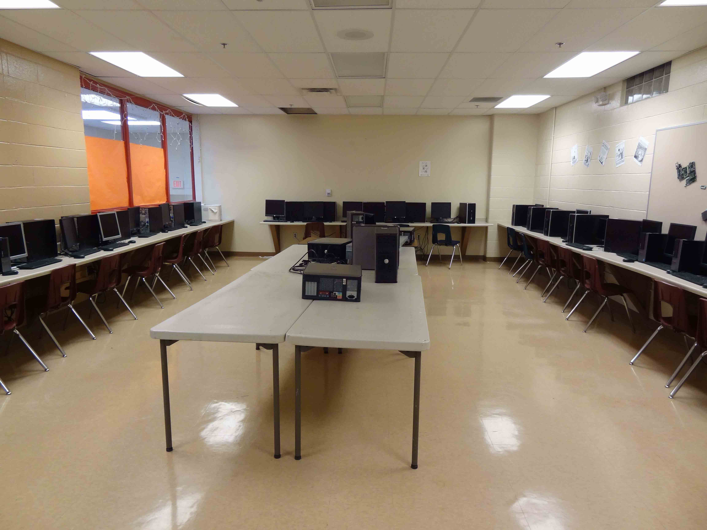
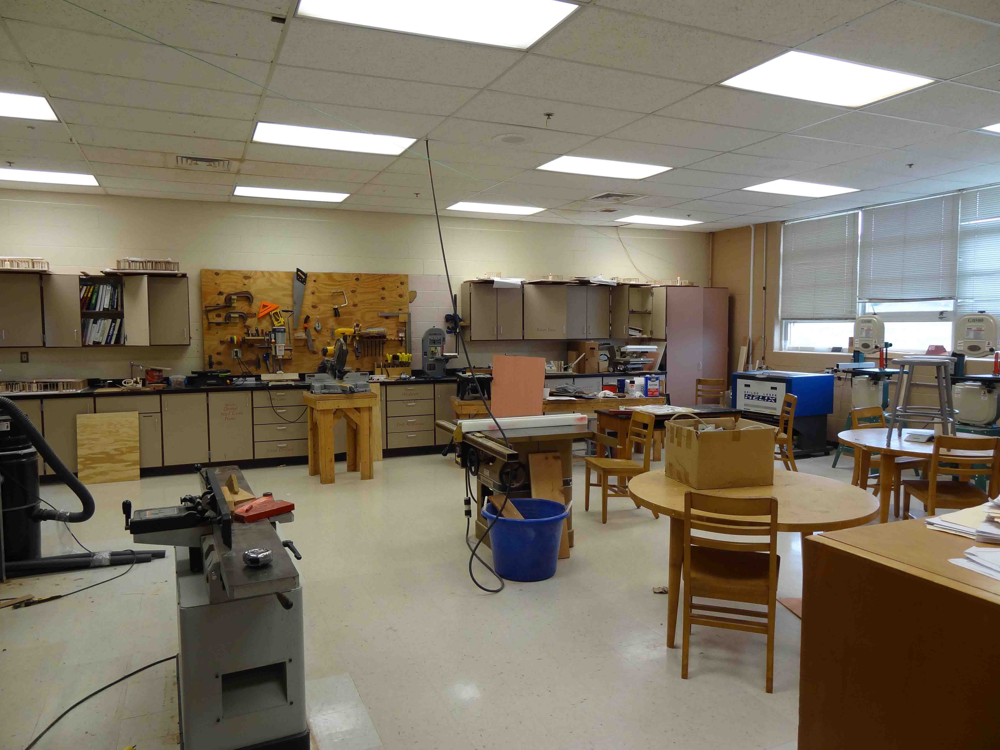
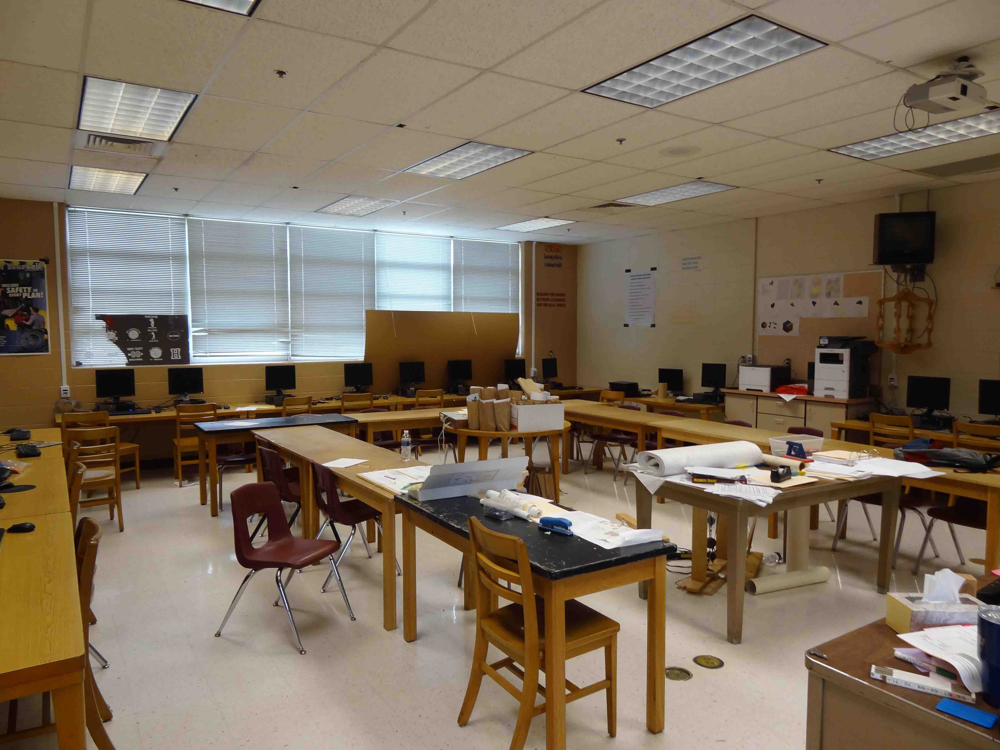

The Technology Student Association enhances personal development, leadership, and career opportunities in STEM, whereby members apply and integrate these concepts through intracurricular activities, competitions, and related programs.
Learning to lead in a technical world
I believe that Technology Education holds an important place in my life in the technical world. I believe there is a need for the development of good attitudes concerning work, tools, materials, experimentation, and processes of industry. Guided by my teachers, artisans from industry, and my own initiative, I will strive to do my best in making my school, community, state, and nation better places in which to live. I will accept the responsibilities that are mine. I will accept the theories that are supported by proper evidence. I will explore on my own for safer, more effective methods of working and living. I will strive to develop a cooperative attitude and will exercise tact and respect for other individuals. Through the work of my hands and mind, I will express my ideas to the best of my ability. I will make it my goal to do better each day the task before me, and to be steadfast in my belief in my God, and my fellow Americans.
Every year, organizations in our school do a very beneficial fund raising project in our community. This project is roadside clean-up where different groups go out into the county and clean up the roads that traverse the county.
Mr. Holcomb is a graduate of Henry County High School, class of 2006. Afterwards, he represented our school well by continuing his education with Northern Kentucky University and Gateway Community and Technical College, located in Florence, KY. During and after his tenure at Gateway, Mr. Holcomb worked as a computer technician and assistant network administrator for LeanCor Supply Chain Group. After 2 ½ years of performing these duties, he felt the need to move back to his hometown of Henry County. It just so happened that the Henry County school district had an opening for the computer technician role. Mr. Holcomb was offered the job and worked it to his fullest extent for 2 years. During this time, he began to cultivate relationships with faculty as well as the students. Therefore, when a position at the high school opened for CIT instructor, they had one man in mind. That man was Mr. Holcomb. After a month of debating whether or not he could successfully prepare students for their future in technology, Mr. Holcomb accepted the role and began his task of transforming the culture of Henry County’s IT program. Nearing the end of his 1st full school year with Henry County, Mr. Holcomb is happy with his decision to teach, and is extremely excited for the future of the program.
This course provides an introduction to the computer and various aspects of computer technologies. Topics include computer hardware and an introduction to various software packages, file management, the Internet, e-mail, social web, digital audio and video, security and computer ethics.
Focuses on the design of computing systems, including instruction in the principles of computer hardware and software components, algorithms data basis, telecommunications, etc. Includes the knowledge to identify and explain PC components, setup a basic PC workstation, conduct basic software installation, identify compatibility issues and recognize/prevent basic security risks and also gives knowledge in the areas of Green IT and preventative maintenance of computers. Completer students will be eligible to take the CompTia IT Fundamentals industry certification exam.
Introduces a variety of tools and techniques to provide user support in help desk operations. Explores help desk concepts, customer service skills, troubleshooting problems, writing for end users, help desk operations and software, needs analysis, facilities management, and other topics related to end user support. Completer students will be eligible to take the CompTia A+ industry certification exam.
Digitally organizing the information technology and information and support services milestones achieved by the student that is reflective of their industry certification readiness, understanding the cost of doing business and preparation of technical and behavioral job performances i.e. interviews. The course also focuses on employability skills to include: a professional digital portfolio that emphasizes critical milestones focusing on entry level information technology technical and employability skills. This course could be taken with the help desk course enhancing skills in both courses.
This class will be a student run “IT Help Desk.” Professional, responsible, tech-savvy students to sit behind the café and help/assist/tutor/repair technology for students and teachers. Students will receive some training in Help Desk Operations. *This is not a career pathway course.
"Since 2001 I have been teaching Engineering. Though I have held several different titles (Industrial arts teacher, Technology Teacher, Engineering Technology Teacher) the job has remained the same. I still refuse to call myself a teacher, I prefer the title “Learning Assistant”. I have been in KY for the past 12 years and fallen in the love with this state. I previously taught for 6 years in upstate NY."
 Introduction to Computer-Aided Drafting and Engineering Design Principles. This course applies the skills, concepts, and principles of engineering. Students explore various technological systems and engineering processes in related career fields. Topics include investigating technological system, design optimization, and problem solving. Students utilize CAD and physical and virtual modeling concepts to construct, test, collect, and report data. This is the foundation class and prerequisite to all other engineering classes. Students will rigorously prepare for industry certification exam for Autodesk Inventor.
A project and research-based Computer Aided Drafting and Design course that extends the learning experiences where students focus on mechanical, electrical, fluid and thermal systems allowing in-depth exploration in selected disciplines of engineering areas such as manufacturing, power/energy/transportation, robotics, hydraulics, electricity/electronics, communications, construction systems, alternative energy and computer aided design and problem solving. Students will be offered the opportunity to complete a certification test for Autodesk Inventor.
This is a fundamental course that provides a project-based learning approach to understanding the principles and concepts of physics and associated mathematics for most Engineering Technology programs. Students explore various careers and disciplines of engineering areas, problem solving and core technology such as, but not limited to, manufacturing, power/energy/transportation, robotics, hydraulics, electricity/electronics, communications, construction systems, alternative energy and computer-aided design.
This is an introduction to residential and light commercial building construction and design. Students will learn basic sketching, mechanical drafting skills with an emphasis on computer aided drafting. In this class, students will design a structure relevant to today’s modern architecture and create models of their designs with various materials and tools. Students will experience and solve many problems in designing or building structures with regards to environment and community impact and limitations from town planning, urban design and landscape architecture to furniture and objects.
This is a hands-on career readiness class. Woodworking is a fundamental skill that is in high demand and students will learn the safe procedures to accomplishing several woodworking tasks. The principles of design are required as each student must design a working set of blueprints for a project they will build.